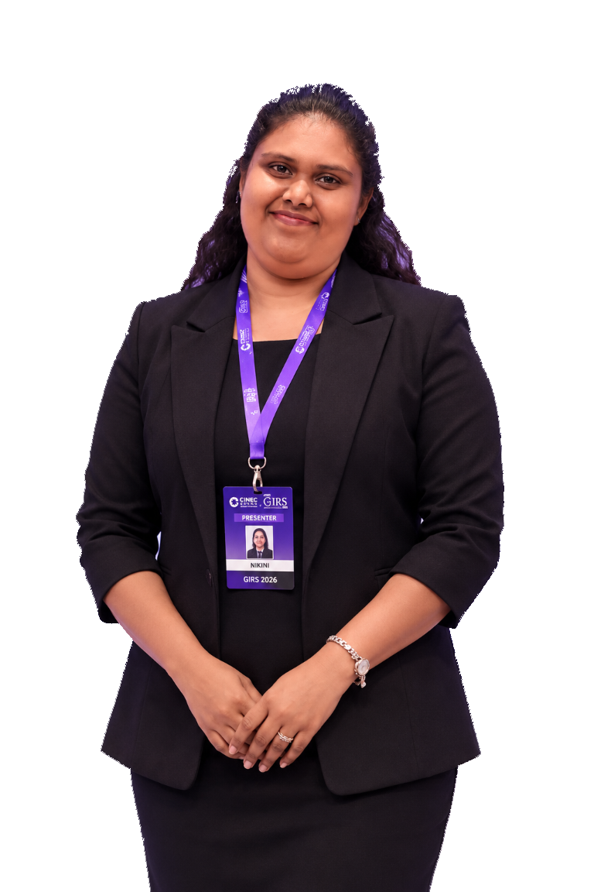

WEB APP · IN DEVELOPMENT
TailorLink
Helping customers discover nearby tailors, explore their services, and book with confidence.
View on GitHubSOFTWARE ENGINEER IN THE MAKING
I build thoughtful digital experiences, bringing people and ideas together through technology.
Based in Horana, Sri Lanka · Available for new opportunities

I'm a Software Engineering undergraduate at CINEC Campus, currently building my skills in full-stack development and team leadership. I enjoy turning complex ideas into useful, approachable software.
From helping people find a local tailor to making digital identity more accessible, I care about building technology that solves real problems. I'm happiest collaborating, learning, and making each detail feel considered.
More about me on LinkedInA few ideas I've had the pleasure of turning into real projects.
WEB APP · IN DEVELOPMENT
Helping customers discover nearby tailors, explore their services, and book with confidence.
View on GitHubACADEMIC TEAM PROJECT · TEAM LEAD
An accessible digital identity platform designed for Sri Lanka's Sinhala-, Tamil-, and English-speaking communities.
View on GitHubACADEMIC TEAM PROJECT
A community lost-and-found platform with searchable listings, Firebase sign-in, and image uploads.
View on GitHubSOFTWARE ASSET MARKETPLACE
A digital marketplace for purchasing reusable software assets—including UI kits, application blueprints, documentation, and software architectures—with a focus on the education and healthcare sectors.
View on GitHubACADEMIC TEAM PROJECT
An online ordering experience to browse restaurant menus, explore food categories, and find a favourite.
View on GitHubTypeScript · JavaScript · Java · Python · PHP · C · Kotlin
Next.js · React.js · Tailwind CSS · HTML5 · CSS3 · Kotlin
Node.js · Express.js · REST APIs · PHP · Nginx
MySQL · MSSQL · MongoDB · Firebase · Oracle
JUnit 5 · Apache JMeter · Selenium · Postman · Git · GitHub · VS Code · IntelliJ IDEA · Android Studio · Figma · Vercel
Team leadership · Agile / Scrum · Planning · Problem-solving · Communication · ClickUp
Every step has taught me something worth carrying forward.
EDUCATION
BSc (Hons) in Software Engineering · Malabe, Sri Lanka
Coursework includes data structures and algorithms, software construction, quality assurance, databases, mobile computing, advanced web technologies, and software testing.
G.C.E. Advanced Level · Engineering Technology stream · Bandarawela, Sri Lanka
LEADERSHIP & COMMUNITY
Managing event budgeting, financial planning, sponsorship coordination, and expense tracking while helping prepare the final financial report.
Research on preserving human information using AI, with a focus on privacy, personal data protection, and responsible AI.
A collaborative challenge in technical problem-solving, logical thinking, and teamwork.
English Professional working proficiency / Sinhala Native / bilingual proficiency
Have an opportunity, a project idea, or just want to say hello? My inbox is always open.
Say hello